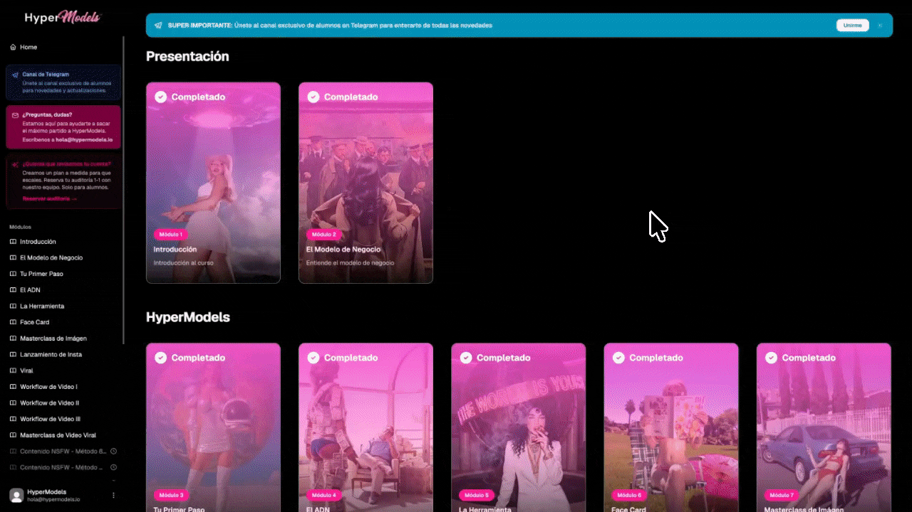
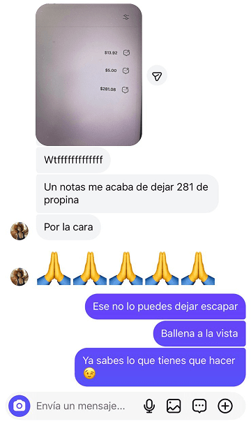
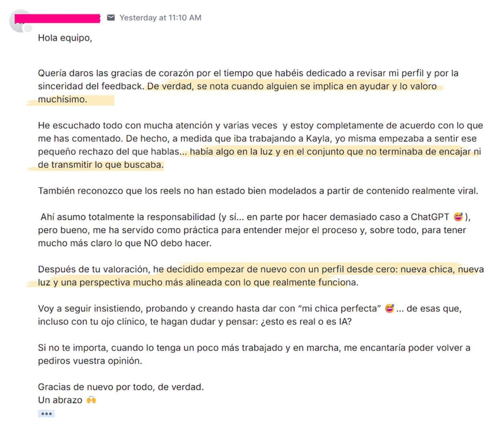
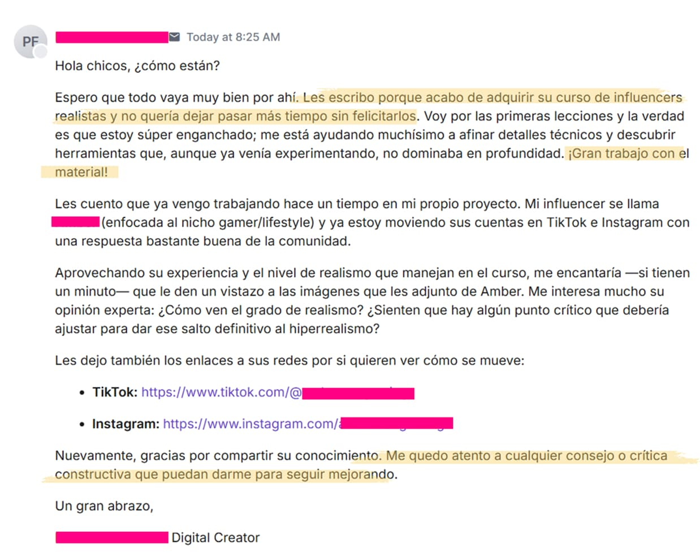
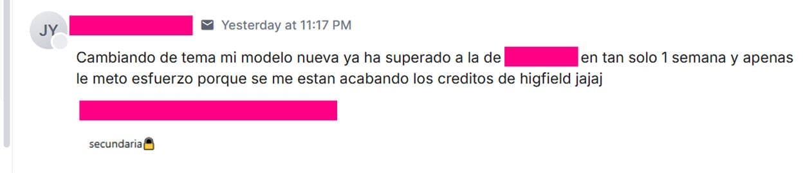
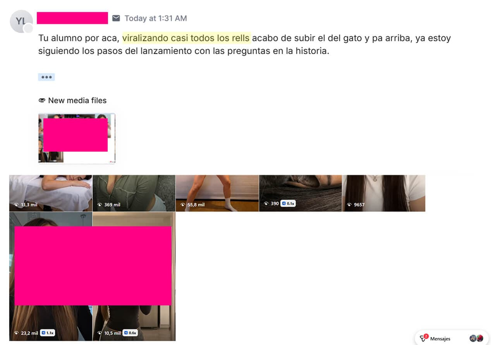
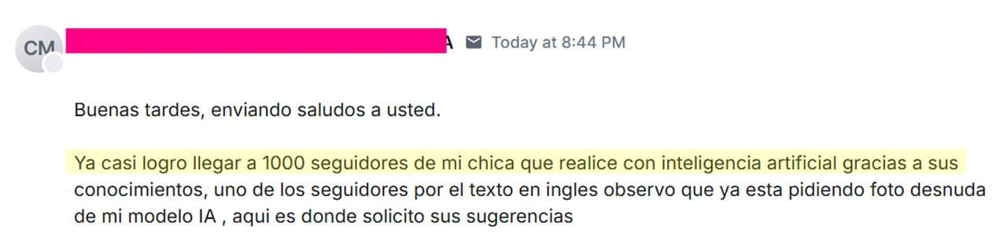
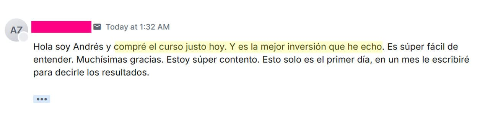

El Sistema Paso a Paso para Generar de $3,000 a $8,000 al mes con modelos IA
Crea un imperio de modelos IA sin mostrar tu cara y empieza a facturar en menos de 14 días.
Acceso inmediato
Pero… ¿qué es HyperModels?
Es el sistema exacto, paso a paso, que usamos para llevar a nuestras modelos IA de 0 a más de 5 cifras en 21 días o menos.
No te prometemos nada. Te enseñamos, clic a clic, exactamente lo que nosotros ya hemos hecho y lo que seguimos haciendo.
De 0 a hot.
Tu activo, diseñado para vender.
Todo empieza con la modelo. Te damos nuestros sistemas para crear, desde cero, una chica que enamora a la cámara: su cara, su cuerpo, su ADN. Combinamos varias referencias hasta que el resultado es, sencillamente, una diosa.
- El ADN: cómo definir un rostro y un cuerpo irresistibles.
- Referencias → resultado: nuestro método de fusión para una coherencia perfecta.
- Consistencia 10/10: la misma modelo, en mil escenas, sin fallos.
 REF 01
REF 01
 REF 02
REF 02
 REF 03
REF 03

Y no solo se ve real — suena real.
Te enseñamos a crear una voz que vende sola. (Y en cualquier acento y región)


El típico
“prompt cutre”


Nuestro Workflow
Multireferencia de 3 Pasos
Alcance
+318%
Seguidores
+0
@tu.modelo.ia
cuando descubres el método correcto ✨
El 80% del juego.
Donde casi todos fallan.
Puedes tener la modelo más espectacular del mundo: si nadie la ve, no vendes. La viralización no es suerte — es matemática. Es el sistema exacto que seguimos con todas nuestras modelos, y cuando lo sigues, los resultados llegan.
- Entrena tu algoritmo para no quedarte nunca sin ideas ni modelos a las que seguir.
- Replica lo que ya funciona con las herramientas exactas — y al precio más bajo del mercado.
- Postea con sistema — la estrategia que convierte cada reel en una apuesta segura.
Entrena tu algoritmo
Tu “Para Ti” se convierte en una máquina de espionaje masivo. Detecta en tiempo real lo que está reventando — modelos ganadoras, formatos virales, ideas infinitas servidas en bandeja.
Replica cualquier viral
Cualquier vídeo que veas, sabrás cómo replicarlo. Te damos las herramientas exactas y la forma más económica de usarlas. Sin suscripciones, pagando solo por generación.
Sistema de posteo
La estrategia paso a paso para que tu contenido reviente. No es suerte — es matemática. La mayoría de nuestros alumnos consigue su primer reel de +50K reproducciones en la primera semana.
La parte fácil: convertir las vistas en dinero.
Si has hecho bien las dos fases anteriores, esto es un juego de niños. Te damos las 4 claves para montar la infraestructura que transforma seguidores en ingresos — sin perder la cuenta por el camino.
Perfil que convierte
Bio, destacados y feed montados para transformar visitas en seguidores.
Tu link, seguro
Coloca tu enlace sin que te cierren la cuenta. Anti-baneo desde el día uno.
Plataforma de fans
Precios, tiers y bienvenida listos para vender en automático.
Contenido premium
Packs privados de alto valor que tus fans pagan una y otra vez.
$$$
Ingresos en
piloto automático
Y sí, te enseñaremos a crear contenido privado de alto valor (ya sabes), sin ComfyUI, con costes muy reducidos, y con una calidad que parece 100% real (no es una exageración). Y además te presentaremos nuestras herramientas privadas que no están disponibles en ningún otro sitio.
Tres fases. Un sistema. Y sí — es mucho más simple de lo que la mayoría piensa.
Solo necesitas conocer el sistema que tienes que seguir y ejecutarlo paso a paso.
Crea videos virales que transforman seguidores en compradores todos los días
Ningún curso en el mercado te enseña como hacer virales de forma sistemática. Nosotros SÍ. Da igual que tengas el mejor contenido Spicy del mundo si no tienes tráfico NO PUEDES VENDERLO.
Área premium con acceso de por vida
Un área de miembros EXCLUSIVA con el método completo — organizado, probado y en constante actualización — el sistema DEFINITIVO paso a paso que necesitas para generar ingresos reales con modelos IA.


Entra hoy por menos de lo que te gastas en una noche de fiesta
Subimos precios en Septiembre
Al comprar hoy, recibirás:
+ Bonos Exclusivos
Esta oferta expira en
Precio original US$97 | Ahora solo
Menos de US$0.08 al día por un sistema que te enseña a generar de US$200 a US$800 al día.
Como alumno, participas en un sorteo mensual de una llamada privada 1-on-1 — valorada en US$300.
Antes de lanzar esto, compramos TODOS los cursos del mercado.
¿El veredicto?
Son todos una absoluta estafa.
Sinceramente, no teníamos intención de lanzar HyperModels. Nosotros ya facturamos MUCHO dinero en la sombra.
Pero hace unas semanas el mercado se llenó de "Gurús de Modelos IA".
Pensamos: "Vamos a ver si esta peña sabe algo que nosotros no". Y compramos TODAS las formaciones. ¿El resultado?
El 99% es basura diseñada para robarte el dinero
El 1% restante es simplemente decente
Lo que necesitas para facturar
Los Gurús de Turno


Si tus modelos facturan tanto,
¿por qué enseñas el secreto por solo $27?
La respuesta es ridículamente simple. Hay dos motivos:
1. Queremos destrozarles el negocio a los vendehumos:
Mi equipo y yo operamos en piloto automático modelos que superan las 5 cifras. Cuando vimos la auténtica basura que venden por ahí, nos hirvió la sangre. Hemos puesto un precio ridículo para reventar el mercado.
2. Win-Win (el negocio a largo plazo):
Sé que si entras hoy por $27, revientas las métricas y haces pasta real, ganarás confianza total en nosotros. Así, si en el futuro te ofrecemos servicios premium, sabrás que somos los mejores y estarás dispuesto a pagar.
Alumnos de HyperModels te cuentan su experiencia
Pero no esperes a que esta página se llene de reseñas, porque entonces ya será demasiado tarde…
Valoración media
Alumnos activos
Recomendarían
“Chavales, no os voy a dejar una reseña. Solo os voy a decir que me parece una locura que no estéis vendiendo esto por 200 pavos. 27 es literalmente un robo.”
Marcos
Alumno de HyperModels“Tengo una amiga que tiene la paginita azul y me estaba dando envidia, pero a mí eso de enseñar mi cara no me va. Pues bien, mi influencer IA ya tiene más seguidores que ella. JAJA.”
Paula
Alumna de HyperModels“He comprado 4 o 5 cursos antes que este y la verdad que eran un timo. En HyperModels se nota que ellos saben de lo que hablan desde la primera clase. Estoy súper viciado. Creo que me lo voy a ventilar en dos días.”
Diego
Alumno de HyperModels“No entendía nada de tecnología ni de IA. Pero el sistema es tan simple que en dos días ya tenía mi modelo creada y su perfil publicado y optimizado. Me he sorprendido a mí misma. Ahora viene la parte de monetizar, jeje.”
Carmen
Alumna de HyperModels“La parte de cómo configurar Instagram para que no te baneen vale el curso entero. Llevo tres cuentas vivas y creciendo. Antes me cerraban una cada dos semanas.”
Adrián
Alumno de HyperModels“Compré el curso un sábado a las 11 de la noche. El domingo por la mañana ya tenía respuesta del equipo a una duda técnica. Eso ya te dice todo.”
Marta
Alumna de HyperModelsEsto son algunos de los mensajes
de nuestros alumnos

No solo te damos el sistema, te acompañamos durante todo el proceso.
Escríbenos a hola@hypermodels.io y te echamos un cable.






De crear tu modelo IA a tus primeros ingresos
El plan exacto, día por día. Sin teoría de relleno — solo ejecución y resultados medibles.
-
Día 1 Setup
Descubre el modelo de negocio
Entiende por dentro cómo funciona y planifica tus próximos 21 días para garantizar resultados.
-
Día 2 Setup
Crea tu Instagram de forma segura
Monta la cuenta siguiendo las buenas prácticas que minimizan el riesgo de baneos desde el primer minuto.
-
Día 3 Setup
Convierte tu algoritmo en una mina de oro
Transforma tu "Para ti" en una fuente infinita de inspiración y modelos ganadoras que ya están funcionando.
-
Días 4–5 Setup
Elige tu nicho y diseña a la chica perfecta
Define el nicho que más convierte y crea a tu modelo de cero: cara, cuerpo y personalidad. Aquí nace el personaje que va a generarte ingresos.
-
Día 6 Setup
Prepara el Instagram perfecto
Sube el contenido perfecto para convertir visitas en seguidores. La mayoría lo hace mal — tú vas a hacerlo bien desde el día uno.
-
Día 7 Crecimiento
Entiende el Método Viral 3.0
Domina la fórmula que está rompiendo el algoritmo en 2026 y sube tus primeros posts.
-
Días 8–11 Crecimiento
Consigue tus primeros virales y seguidores
Aplica lo aprendido día tras día y empieza a ver cómo el contenido despega. Aquí es donde la mayoría ve sus primeros picos de visualizaciones.
-
Días 12–15 Crecimiento
Rompe la barrera de los 1000 seguidores y escala a 5k–10k
La mayoría de nuestros alumnos lo consigue en menos de dos semanas * copiando estrategias ya probadas y validadas.
-
Días 16–17 Monetización
Crea y optimiza tu página de fans
Móntala con nuestra plantilla optimizada: precios, tiers, bio y primer pack de contenido listos para vender.
-
Días 18–20 Monetización
Ejecuta la estrategia de lanzamiento de 3 días
Aplica la secuencia paso a paso de 3 días, gestiona conversaciones y factura entre $200 y $1,000 solo el día del lanzamiento **.
-
Día 21 Resultado
$$$$$$
Sistema en marcha. Toca repetir, optimizar y escalar.
* Datos basados en encuesta interna a alumnos. Los resultados individuales pueden variar en función del esfuerzo y la constancia.
** Cifras basadas en testimonios verificados de alumnos. Los resultados individuales pueden variar.
HyperModels NO es un curso cutre de IA
Y tampoco es para cualquiera. Es para gente que quiere seguir un sistema, ejecutar rápido y monetizar UNA modelo IA.
Esto NO es
Lo de siempre
- Otro curso random de IA
- Una carpeta de prompts genéricos
- Paja para hacerte perder el tiempo
- Teoría para que luego improvises
- “Mira las herramientas y apáñate”
Esto SÍ es
HyperModels
- 01 Un sistema paso a paso
- 02 Un método para crear y monetizar modelos IA
- 03 Estrategias probadas que puedes copiar y pegar
- 04 Tu entrada temprana a este mercado
- 05 Soporte y acompañamiento personalizado para garantizar que consigues resultados REALES
Si buscas una fórmula mágica, esto no es para ti.
Si buscas un sistema claro y accionable, sí.
Tienes 30 días para probarlo.
Si no te convence, te devolvemos hasta el último céntimo.
Mira, entendemos que invertir en algo nuevo siempre genera dudas. Por eso queremos eliminar todo el riesgo de tu lado y ponerlo del nuestro.
Entra, accede al sistema completo, sigue los pasos y aplica lo que enseñamos. Si en 30 días sientes que esto no es para ti — por la razón que sea — nos escribes un email y te devolvemos el 100% de tu dinero. Sin preguntas incómodas. Sin formularios eternos. Sin dramas.
30
Días de garantía
0
Riesgo para ti
* Solo te pedimos (por favor) una cosa: que lo intentes de verdad. Este sistema funciona para quien lo aplica. Si haces tu parte, los resultados hablan solos.
Preguntas frecuentes.
¿Necesito saber de programación o inteligencia artificial?
No. El sistema está diseñado para personas sin experiencia técnica. Te guiamos paso a paso.
¿Cuánto tiempo necesito dedicar al día?
Depende de ti, cuanto más tiempo estés dispuesto a invertir, antes verás resultados. Una vez que tu modelo está escalada, puedes mantenerla con una inversión mínima de tiempo.
¿Es legal?
Sí. Siempre que no hagas tonterías. Te enseñamos las mejores prácticas para no meterte en problemas.
¿Cuándo voy a ver resultados?
La mayoría de nuestros alumnos ven sus primeros ingresos entre la segunda y cuarta semana.
¿Cómo funciona la garantía?
Fácil. Si nuestra formación no te convence, sea por el motivo que sea, te devolvemos el dinero. El único requisito es que no hayan pasado más de 30 días desde la fecha de compra. Dicho esto, estamos seguros de que recibirás mucho más valor de lo que has invertido. A día de hoy hay más de 200 alumnos dentro, y solo 2 han solicitado una devolución.
Estás a 7 días de lanzar tu primera modelo IA rentable.
Acceso inmediato
No te quedes con dudas
Si tienes alguna pregunta antes de acceder, escríbenos y te respondemos lo antes posible.
hola@hypermodels.io